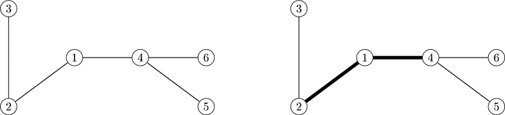

Home Page
F.A.Qs
Statistical Charts
Past Contests
Scheduled Contests
Award Contest
| Online Judge | Problem Set | Authors | Online Contests | User | ||||||
|---|---|---|---|---|---|---|---|---|---|---|
| Web Board Home Page F.A.Qs Statistical Charts | Current Contest Past Contests Scheduled Contests Award Contest | |||||||||
|
Language: Bridges
Description Once upon a time there was a country in a delta of a far-away river. The country had n islands and there was a town on each island. The towns were connected by roads. There was exactly one route from each town to each other one (possibly passing through some intermediate towns). Unfortunately, each road had to cross the river with a ford, since bridges were not known, so the travel was quite uncomfortable and could only be made by a horse. When Bridge Building technology was discovered the king decided to build bridges instead of some fords to make roads easier to travel. Bridges would allow fords to be crossed even by carriages. The king liked the idea with bridges and ordered to build as many bridges as possible. Unfortunately, the country was quite poor, so only k bridges could be built. The king asked you — his major advisor — to develop a bridge building plan. You have to choose k fords in such a way that the sum of travel times between all pairs of towns becomes as small as possible. You must assume that the ordinary roads would be traveled by horses, and roads enhanced with bridges would be traveled by carriages. Input The first line of the input file contains four integer numbers: n, k, sh and sc — the number of towns in the country, the number of bridges to build (1 ≤ k < n ≤ Each of the following n − 1 lines contains three integer numbers: bi, ei — the towns connected by the road, and li — the road length in meters (1 ≤ li ≤ 106). Towns are numbered from 1 to n, roads are numbered from 1 to n − 1. Output Output k numbers — the numbers of roads where the bridges should be built. If there are several possible optimal bridge building plans, output any of them. Sample Input 6 2 1 2 1 2 5 3 2 6 1 4 4 4 6 4 4 5 5 Sample Output 1 3 Hint  Source Northeastern Europe 2006, Northern Subregion | ||||||||||
[Submit] [Go Back] [Status] [Discuss]
All Rights Reserved 2003-2013 Ying Fuchen,Xu Pengcheng,Xie Di
Any problem, Please Contact Administrator